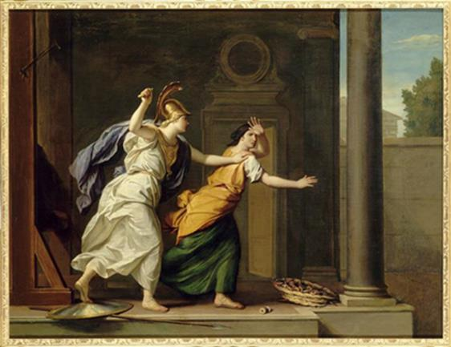

Xưa kia ở xứ Lydie, thần Colophon có một người con gái tên là Arachné114. Nàng nổi danh vì sắc đẹp thì ít nhưng về tài dệt vải, dệt lụa thì nhiều. Không một người phụ nữ xứ Lydie nào có thể sánh tài với nàng về nghệ thuật dệt. Nhìn những tấm lụa do bàn tay nàng dệt ra người ta tưởng chừng như Arachné đã lấy những tia nắng làm sợi cho nên nó mới óng ả, trau chuốt và mịn mỏng đến như thế. Còn khi những thiếu nữ Lydie mặc những tấm lụa do Arachné dệt, tham dự vũ hội thì thật là tuyệt đẹp. Người ta bảo đó là những nàng tiên, những Nymphe đang ca múa trong những buổi sớm mai dưới lớp sương mù mờ mờ ảo ảo. Đến cả những vị thần, nam thần và nữ thần cũng phải khâm phục tài dệt khéo léo của nàng và nhiều vị đã từng xuống tận nơi để xem Arachné dệt. Song thói đời kẻ có tài lại dễ mắc cái bệnh kiêu căng. Arachné mất tỉnh táo trước những lời khen ngợi, quá say mê, nhấm nháp tán thưởng những công trình lao động của mình đến nỗi coi rằng trên thế gian này ngoài Arachné ra thì không có người thứ hai nào dệt nổi được những tấm vải, tấm lụa đẹp đẽ đến như thế. Có người nhắc nàng đừng quên tài nghệ của nữ thần Athéna, vì một người trần không thể nào có tài sánh ngang với các bậc thần linh được. Nhưng Arachné chẳng thèm để ý đến lời khuyên nhủ chân thành ấy mà lại còn ăn nói sỗ sàng hơn:
- Thì ta thách cả nữ thần Pallas tới đây thi tài dệt với ta đấy! Athéna cũng không thắng nổi Arachné này đâu. Ta sẵn sàng thử tài một phen với nữ thần.
Những lời thách thức ngạo mạn ấy không cánh mà bay đến tai nữ thần. Một bữa kia, một bà già đầu tóc bạc phơ, lưng còng, chống gậy lần bước tới xứ Lydie tìm gặp Arachné và nói với nàng:
- Ta nghe nói con có ý định thách thức nữ thần Athéna đua tài dệt với con. Con hãy từ bỏ ý định đó đi vì dù sao đây cũng là lời khuyên bảo của một người nhiều tuổi hơn con. Năm tháng trôi đi mang theo của ta sức khỏe và cũng để lại cho ta nhiều kinh nghiệm bổ ích. Những người trần thế chẳng thể nào tài giỏi hơn các vị thần. Con hãy đua tài với các bạn con nhưng đừng có thách thức các vị thần. Con phải dâng ngay lễ vật cầu xin nữ thần Athéna tha thứ cho những lời nói phạm thượng của con.
Nghe cụ già nói xong, Arachné chẳng cần bình tâm suy nghĩ, nàng trả lời ngay bà cụ:
- Cụ già ơi! Đúng là tuổi tác đã làm cho cụ trở thành lẩm cẩm mất rồi. Thôi cụ hãy trở về nhà và đem những lời khuyên bảo ấy mà dạy cho con cháu của cụ. Còn ta, ta chẳng nghe cụ đâu. Ta vẫn muốn thi tài với nữ thần Athéna một phen cho tỏ tường cao thấp. Lời thách thức của ta chắc rằng đã đến tai nữ thần Athéna từ lâu, thế mà nàng vẫn không đến. Hay nàng không dám thi tài với ta?
Arachné vừa nói dứt lời thì bà cụ già thét lên một tiếng:
- Ta đây, nữ thần Athéna con của Zeus đấng phụ vương đây! Hỡi Arachné, ta sẵn sàng chấp nhận cuộc thi tài dệt với nàng!
Và phút chốc bà cụ già lưng còng, tay chống gậy yếu đuối, run rẩy đã hiện lại nguyên hình là nữ thần Athéna mắt sáng long lanh, đầu đội mũ trụ, tay cầm ngọn lao đồng uy nghi, lộng lẫy, ánh sáng tỏa ra ngời ngợi.
Các thiếu nữ Lydie đứng xung quanh đó thấy vậy vội đến trước nữ thần Athéna kính cẩn cúi chào. Chẳng mấy chốc từ khắp nơi kéo đến đông nghịt những người. Ai ai cũng muốn được chiêm ngưỡng vị nữ thần danh tiếng lẫy lừng con của Zeus. Riêng có Arachné vẫn giữ nguyên thói kiêu căng, chẳng từ bỏ ý định thi tài mà lại tỏ ra bất kính. Nàng không biết rằng nàng đang dấn thân vào cái chết. Còn nữ thần Athéna thì tỏ ra không kìm nổi sự giận dữ. Khuôn mặt xinh đẹp của nữ thần ửng đỏ lên như nàng Bình minh-Éos mỗi sáng chắp đôi cánh hồng từ dưới biển bay lên.
Cuộc thi bắt đầu. Nữ thần Athéna dệt tấm khăn choàng cảnh vật đô thị Athènes. Đây là ngọn đồi Acropole vươn cao lên trên những xóm làng. Theo từng bậc đá đi lên, những thiếu nữ Athènes đang nối gót nhau mang lễ vật đến dâng cúng các vị thần ở những đền thờ đẹp đẽ, uy nghi. Nữ thần Athéna dệt cảnh cuộc tranh giành quyền cai quản vùng đồng bằng Attique và đô thị Athènes, giữa nữ thần và thần Poséidon, vị thần cai quản mọi biển khơi suối nguồn, sông nước. Các vị thần Olympe dưới quyền điều khiển của thần Zeus tối cao ngồi xem cuộc tranh đua để giám định kết quả. Thần Poséidon, vị thần làm Rung chuyển Mặt đất, giáng cây đinh ba vào một tảng đá làm nước chảy vọt ra tung tóe. Đến cảnh nữ thần Athéna phóng lao xuống lòng đất, những đường dệt mới nổi bật lên đẹp đẽ làm sao! Cây olive từ lòng đất sâu, xanh thẳm mọc lên. Thần Zeus tươi cười đưa tay ra chỉ vào cây olive, quyết định Athéna thắng cuộc. Xung quanh tám khăn choàng nữ thần Athéna dệt những cành lá olive và cảnh những người trần thế bị các vị thần trừng phạt vì tội kiêu căng, khinh thị thánh thần.
Arachné quyết không chịu thua kém nữ thần Athéna. Nàng dệt lên tấm thảm của mình biết bao cảnh sinh hoạt của thế giới thần linh. Chỗ này là chiến công của các vị thần Olympe đối với những tên Đại khổng lồ, chỗ kia là cảnh yến tiệc tưng bừng của các vị thần trên đỉnh Olympe trong tiếng đàn ca của Apollon và các nàng Muses. Arachné còn dệt nên biết bao cảnh các vị thần đắm đuối trong dục vọng ái ân với người trần thế. Nàng cũng không quên dệt cả những cảnh ghen tuông và những thú vui trần tục, những cơn giận dữ gớm ghê và những sự trừng phạt bất công. Xung quanh chiếc thảm Arachné còn dệt những vòng dây leo quấn quít, uốn lượn rất khéo léo. Có thể nói tấm thảm của Arachné dệt thật là hoàn mỹ và dù là một vị thần hoặc một người trần thế có đôi mắt tinh tế nhất cũng khó mà quyết định được rằng tấm thảm của Arachné thua kém chiếc khăn của Athéna ở chỗ nào. Điều đó khiến nữ thần Athéna phật ý. Nhưng điều làm nữ thần bất bình hơn hết là trên tấm thảm dệt khéo léo đó, Arachné đã miêu tả thế giới thần linh với một thái độ bất kính. Arachné đã phơi bày tất cả những thói xấu của các vị thần, những dục vọng trần tục của các vị mà trong thâm tâm các vị không muốn ai hoặc cho phép ai nói đến. Những người trần thế đoản mệnh phải biết tôn kính, phục tùng các vị thần, phải giữ đúng bổn phận dâng cúng lễ vật đều đều và nhất nhất tuân theo những lời phán truyền của thế giới thần linh, và tốt hơn hết là ca ngợi. Như vậy là Arachné đã phạm tội bất kính đến hai lần đối với thần thánh: dám đua tài với thần thánh và bôi nhọ thần thánh. Nữ thần Athéna không thể chịu được một hành động vô đạo đến như vậy. Nàng xé tan ngay tấm thảm của Arachné và cầm con thoi vụt, đánh túi bụi vào mặt Arachné, Arachné ôm đầu chạy. Uất ức và đau đớn, nàng treo cổ tự tử. Nhưng Athéna đuổi theo và kịp thời gỡ Arachné ra khỏi dây treo cổ.
Nữ thần bằng một giọng đầy khiêu khích nói với nàng:
- Hỡi cô gái ương bướng, cô không chết được đâu! Cô sẽ phải sống mãi, sống đời đời để dệt tấm thảm của cô. Và con cháu cô đời đời kiếp kiếp cũng sẽ phải dệt mãi, dệt mãi như cô.

Arachné trừng phạt Arachné
Nói rồi Arachné lấy một thứ nước cỏ thần nhỏ vào người Arachné. Thế là toàn thân nàng co rúm lại, mớ tóc dài óng chuốt, đẹp đẽ là thế bỗng nhiên rụng hết, nàng biến thành con nhện với những cái chân dài nghêu ngao, lông lá. Và thế là cũng từ đó trở đi con nhện Arachné cứ treo thân trên tấm thảm do mình dệt ra và cứ thế dệt mãi, dệt mãi, dệt hết ngày này qua tháng khác, năm này qua năm khác kiếp kiếp đời đời trên tấm thảm của mình.
[114] Tiếng Hy Lạp arachné: con nhện.